Works
作曲・編曲・講師 三つの柱を持つ
作曲家 藤原典子
Website

concept
音楽家のWebサイトを作成しました。活動内容は作曲・編曲・講師と三つの柱があるため、三つの内容が伝わりやすいようCSSのアニメーションや、jQueryによる動きの実装で工夫しました。スマートフォンからの閲覧が多いことを想定し、レスポンシブにも対応しています。イギリス留学の経験もあるため、英語ページも作成しました。
design
クラシック音楽出身で、ピアノ講師でもあるため、これから音楽を習わせたいと考える保護者、主に女性をターゲットに落ち着きのあるサイトを目指しました。作曲の分野は現代音楽のため、プロフィール紹介の背景画像には抽象的な絵画を用い、現代的、先進的な雰囲気も表現しました。ロゴはイニシャルに音符をあしらったものを作成しました。
- ＃E6C5CF
- ＃BDD8DD
- ＃AF9DC0
contents
ヒーローエリアの画像は、2種類をアニメーションで切り替えながら表示しています。
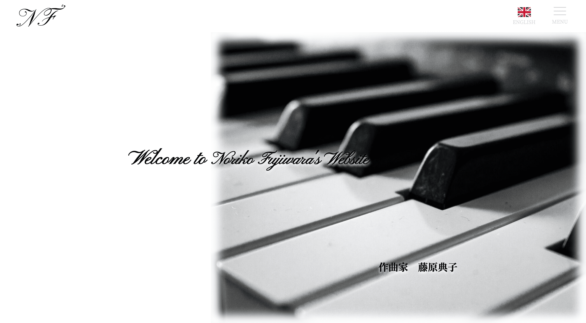
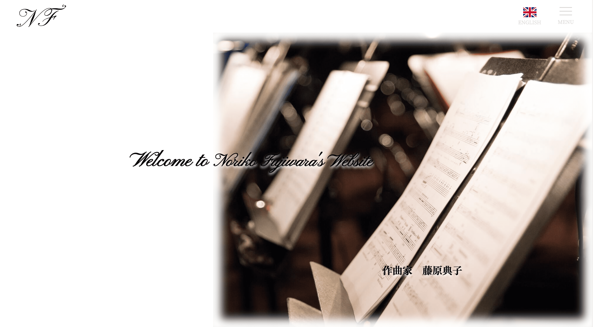
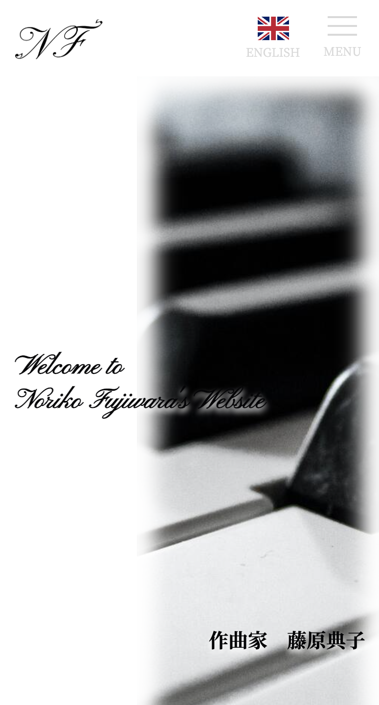
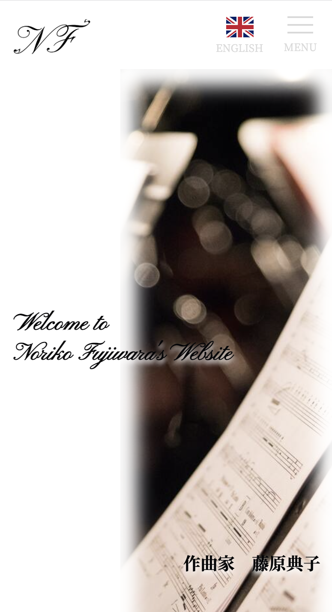
ページ紹介のセクションでは、活動の三つの柱をアニメーションを使って簡潔に、わかりやすく表現しました。
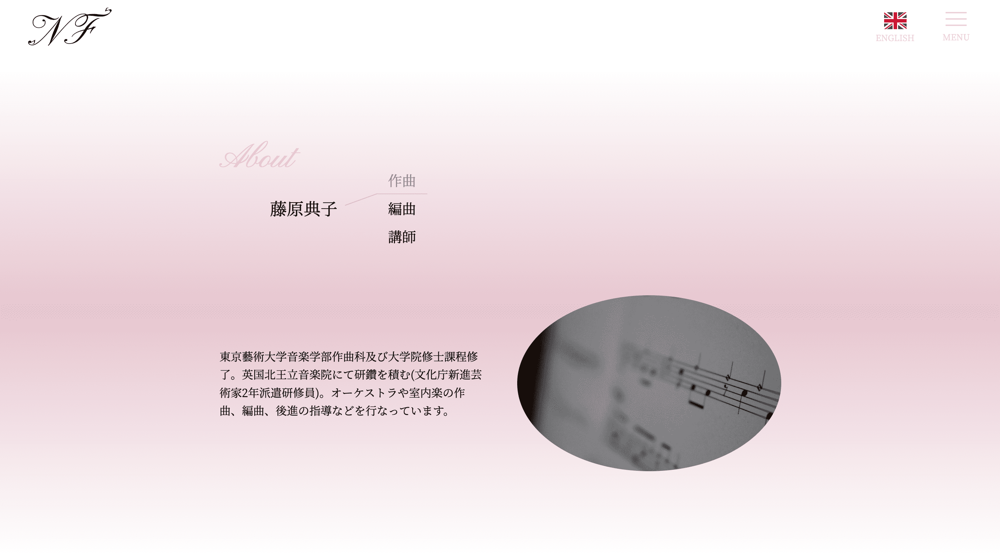

最新の活動紹介ではチラシの画像や動画へのリンクを掲載。
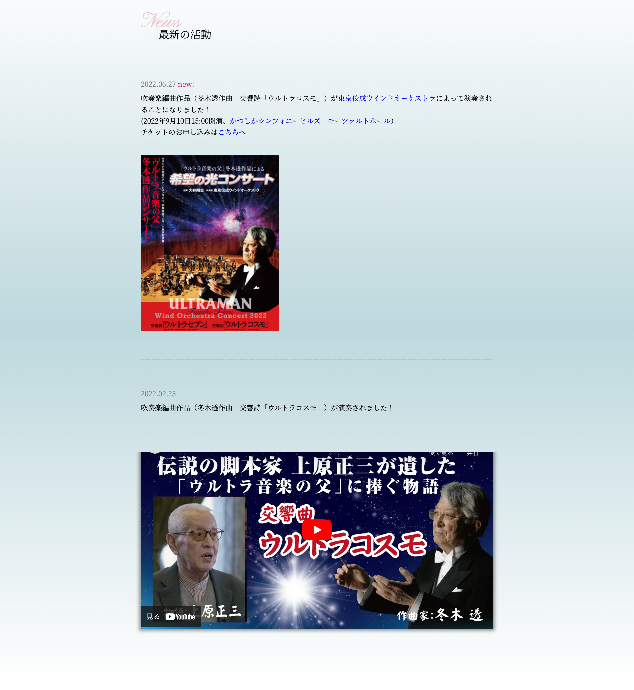
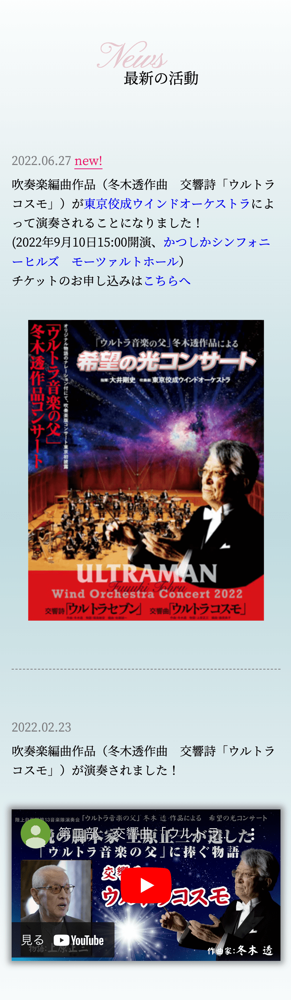
講師の活動紹介や所在地、料金表を見ながら、お問合せページにも行きやすくなるよう、ボタンを固定で表示しています。
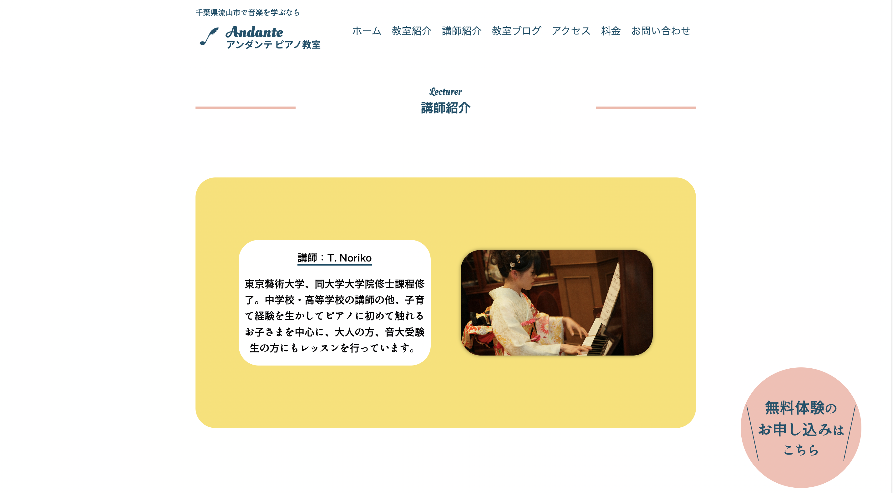
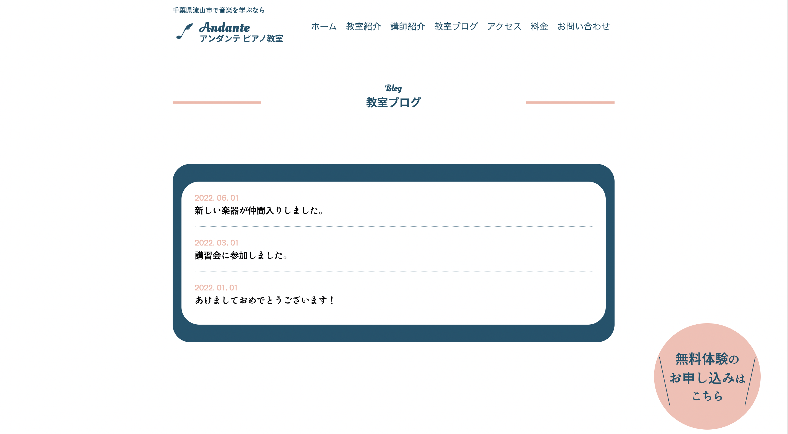
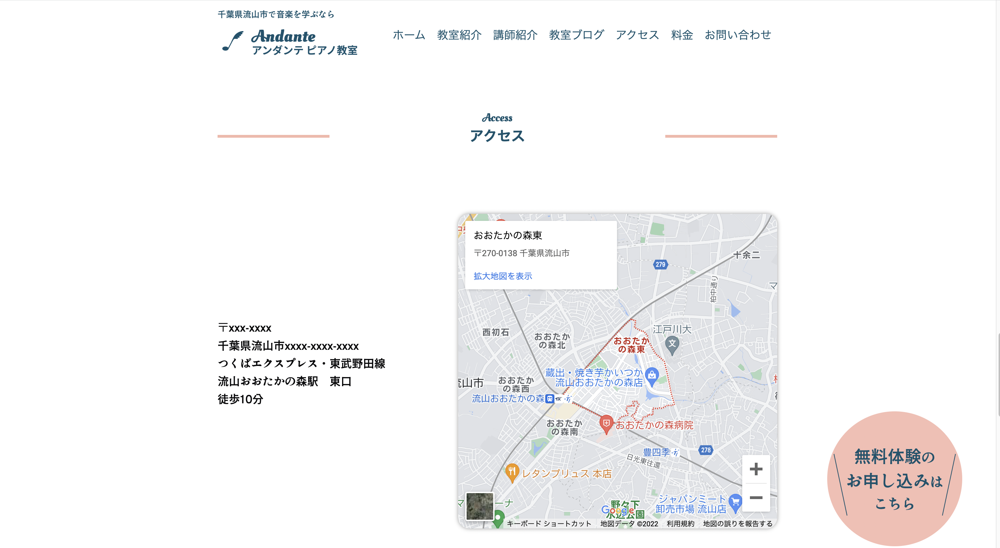
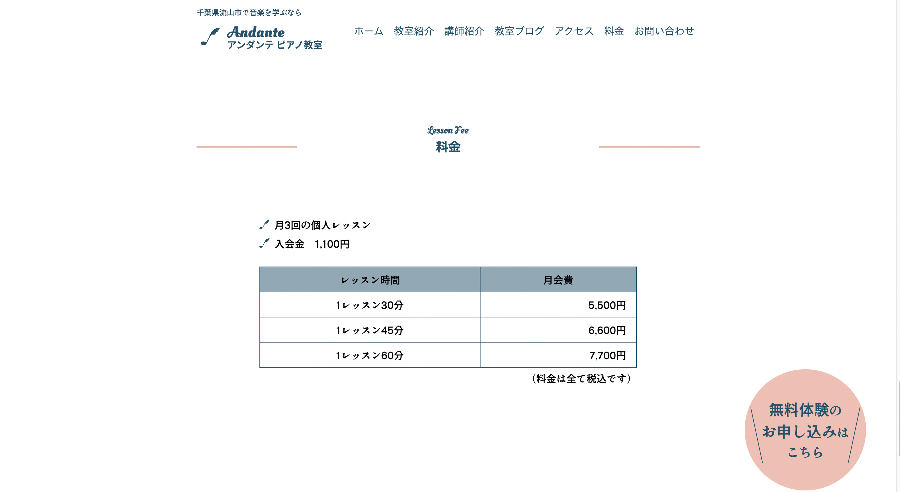
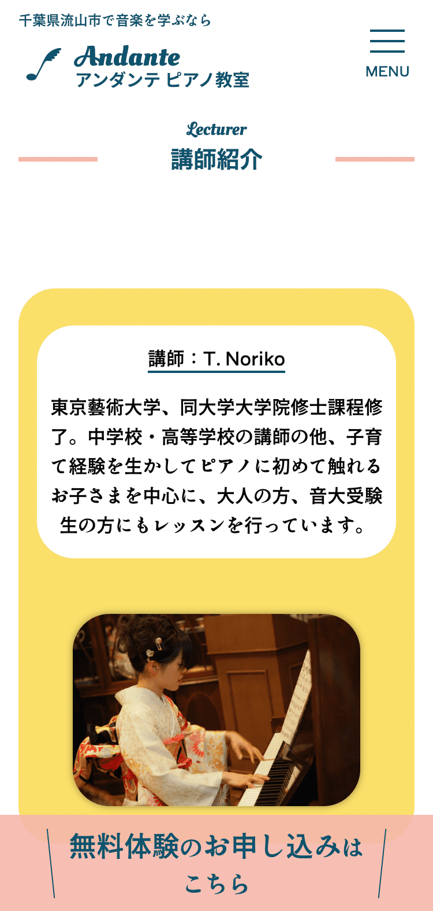
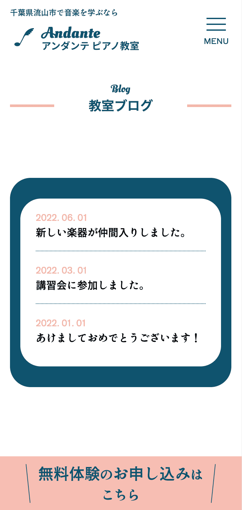
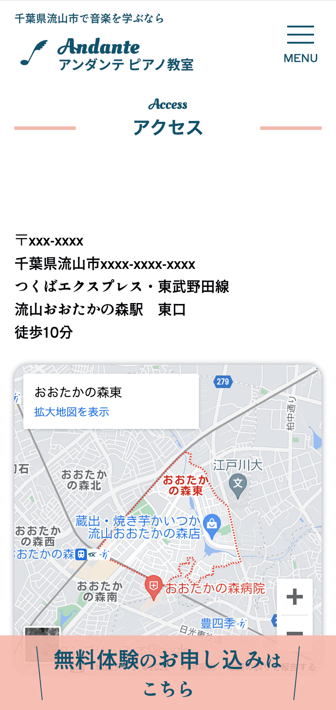
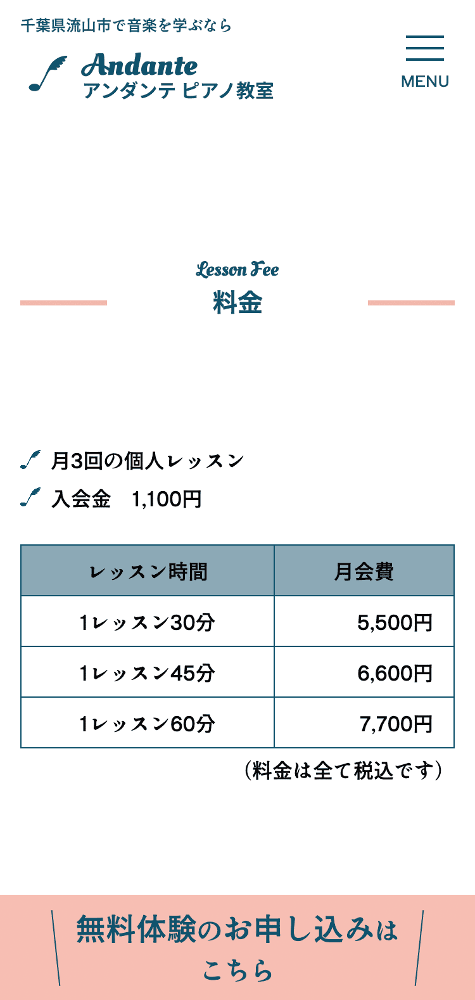
お問合せフォームも実装しました。
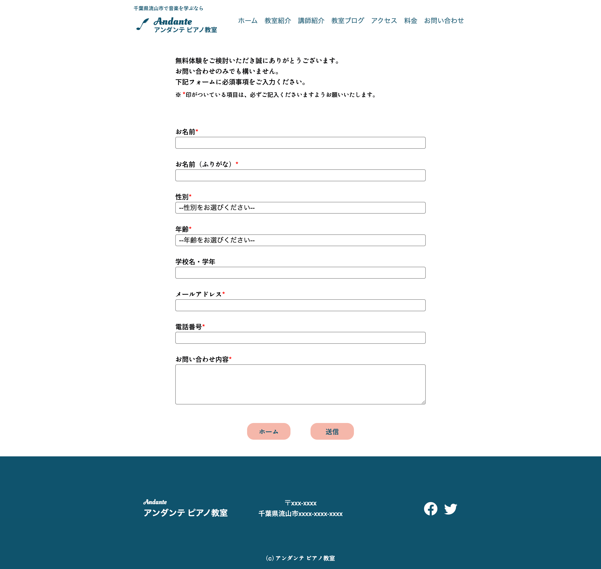
data
- 制作範囲 企画・サイト設計・デザイン・コーディング
- 制作期間 2022年8月〜 約1か月
-
使用ツール
Figma(デザイン),
Visual Studio Code(コーディング） - 使用言語 HTML, CSS, JavaScript, jQuery
- url https://tomatonft.github.io/andante-piano/